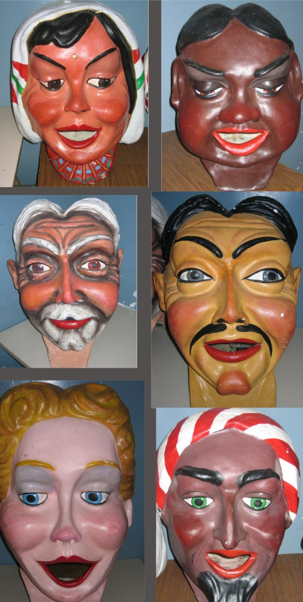

kapabèsties

Les kapabèsties
La família Kapaoltis no estaria completa sense les Kapabèsties. Es tracta del Gegant de Sant Antoni, la Draga Olti i els sis capgrossos.
Gegant de Sant Antoni

La història del Gegant de Sant Antoni comença amb un tràgic desenllaç. La primera cara que es va fer del gegant es va desfer en més de 400 bocins abans d'acabar la construcció. Amb els anys s'ha recuperat i ara llueix en tota la seva esplendor amb una alçada de quasi 4 metres i un pes inferior als 40 kg.
També conegut com el "dimoni de Sant Antoni", el Gegant es pot veure a la Mostra d'Entitats que se celebra a la plaça Trafalgar durant les festes de Llefià. La resta de l'any, el gegant descansa a la Biblioteca Llefià-Xavier Soto.
Draga Olti

La Draga Olti és l'última bèstia de foc adoptada pels Kapaoltis l'any 2007. Anteriorment, la draga acompanyava els diables de Nova Lloreda.
La Draga ha participat en esdeveniments com la Festa de Bèsties de Montmeló, les festes de Maig de Badalona i l'Exposició de Bestiari. També és habitual a la Mostra d'Entitats de Llefià.
Capgrossos
Els sis capgrossos van ser donats per l'entitat sabadellenca Nous Temps. Cada capgròs té la seva pròpia personalitat i història:
Indira
Niña hindú de Calcuta (Índia). Li agrada ballar.
Naja
Niña simpàtica de la tribu Bosquimans (Àfrica).
Sang-Yon
Nen de Shangai, descendent de l'inventor del paper.
Naram-Sin
Àrab, li agrada cantar.
Biljana
Niña bòsnia de Sarajevo.
El Senyor Quimet
Viu a l'Alt Urgell (Catalunya), amant de la naturalesa.